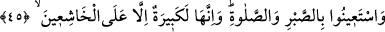
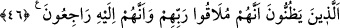

45. Sabır ve namaz ile Allah’dan yardım isteyin. Şüphesiz o (sabır ve namaz),
Allah’a saygıdan kalbi ürperenler dışında herkese zor ve ağır gelen bir görevdir.
Ey İsrâîloğulları! İhtiyaçlarınızı gidermem için benden sabırla ve namazla yardım
isteyin. “Sabır”la sığınmaktan maksad ya Allah’a güvenerek zafer ve genişliği
beklemekle; ya da nefs tasfiyesi ve şehvetleri kırmaya yarayan yeme ve içmede aşırı
gitmekten kendini tutmak anlamına gelen oruçla sığınmaktır.
Namazla yardım dilemekten maksad ise isteklerine karşılık verilinceye ve musîbetleri
savuşturmaya kadar onları vesîle kılıp O’na sığınarak yardım dilemektir. İsrâîloğulları
riyâseti, malı ve debdebeyi bırakmak gibi, zor işlerle emredilince bu şekilde namaz ve
sabırla tedâvî edilmişlerdir. Çünkü bunları bırakmak, kolay bir iş değildir. Rivâyet
edildiğine göre, Peygamber Efendimiz kendisine bir iş, güç geldiğinde namaza sığınırdı.
[262]
Rivâyete göre İbn Abbas, yolculukta iken kendisine bir kızının öldüğü haberi
verilince: “Şüphesiz biz Allah içiniz ve mutlaka O’na döneceğiz” (el-Bakara, 2/156)
âyetini okudu ve: “Kusûru örten Allah’tır, rızkı veren Allah’tır, ecri verecek olan da
Allah’tır.” dedi. Sonra yoldan uzaklaştı, namaz kıldı. Sonra da: “Sabır ve namazla
Allah’dan yardım dileyin” âyetini okuyarak devesine bindi.
“Fakat kendilerini çağırdığın bu (şey) Allah’a ortak koşanlara ağır geldi” (eş-
Şûrâ, 42/13) âyetinden de anlaşıldığı gibi, namaz ve sabırla Allah’dan yardım dilemek,
O’ndan korkan ve saygı gösteren kimseler dışındakilere ağır gelir.
“Huşû” âzâlarla, “hudû” kalble veya huşû sabırla, hudû geri kalan âzâlarla olur.
Huşû sâhibi olanlar, Rablerine münâcât hâlinde kendilerinden geçtiklerinden, yorgunluk
ve meşakkat hissetmezler. Nitekim Nebî (a.s.) namaz hakkında: “Gözümün
nûrudur”[263] buyurmuştur. Çünkü o, namazda huzûr bulur; dünyevî işleri yorgunluk
sayardı.
46. Onlar, kesinlikle Rablerine kavuşacaklarını ve O’na döneceklerini düşünen
ve bunu kabûllenen kimselerdir.
“Zann” şüphe etmek veya yakînen bilmek mânâsına gelen iki zıd mânâlı bir
kelimedir. el-Kevâşî tefsîrinde “recâ” kelimesinin de emniyet veya korku mânâlarına
gelen zıd anlamlı kelimelerden olduğu söylenir.
Allah’a kavuşmak, O’nu görmekle olur. Esas olan görüşe göre “likâ” kıyâmet